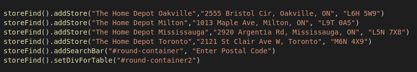

This library is useful for any business that has many branches. It will allow you to create a storefinder tool on your web app or website. This will allow your customers to quickly find the closest branch of your business to them. Your developers can focus on more important aspects of your application and simply use the Storefind JS lbrary to add a "stores near you" page on your website.
You simply import the Storefind library. Then use our addStore() function to add the store locations you would like to add. The code you will use is "storeFind().addStore("STORE NAME","STORE ADDRESS", "POSTAL CODE")" As you can see in the example, in the function you will specify the store or branch name, its address and also its postal code. You can add as many stores as you like. Once you have added all the stores, you will use the fucntion addSearchBar(). Here is an example "storeFind().addSearchBar("DIV-ID", "PLACEHOLDER"). addSearchBar() takes in the div id that you want to display the search bar within on your page and the placeholder for the the input feild of the search bar. This is the search bar that your customers will use. They will input their postal code or address and our library will create and display a table with your store or branch locations sorted by ascending distnace from the customer. You may use the function storeFind().setDivForTable("DIV-ID") to set the div for where you want the table of locations to be displayed. The table will have the columns: store name, location, distance from you, and directions. The directions column will hold a button which links to google maps with the repective stores location. The other columns are self explanitory.
Below I created an example with the following code:
You can enter a valid postal code into the search bar below and hit the search button. When you do the home depot locations that were added will be sorted accroding to thier distance from you (the postal code you entered.) All this is done with the few lines of simple code above. The library takes care of constructing everything for you. You can do the same thing but with your businesses' locations.
To get started you will need to include the storefind.js script in your file. However, storefind.js uses jquery so you must first have the jquery script tag. You can simply provide the follwing script: script src="https://ajax.googleapis.com/ajax/libs/jquery/3.5.1/jquery.min.js for jquery. You may use your own styles. If you would like to use the styles of the table in our example you can use our styles file.
There are only 3 fucntions a user of storeFind library accessess. They are